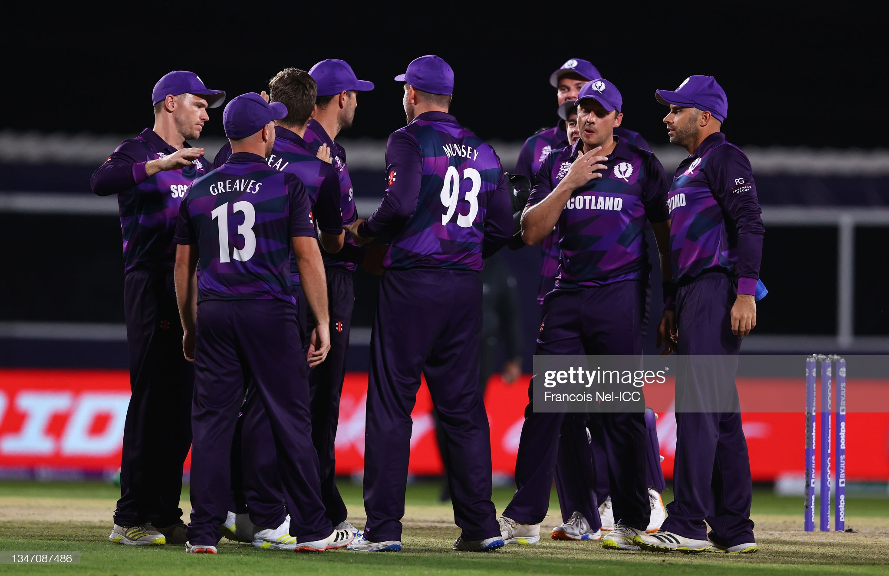
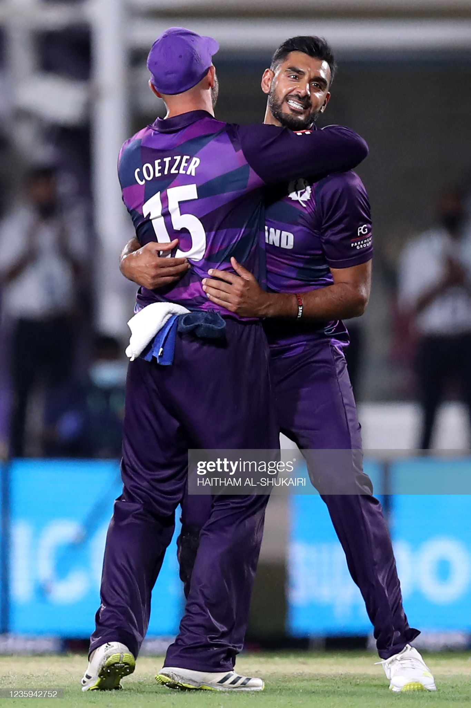

If we look back at yesterday's game against Bangladesh - all of the talk leading into the tournament from people like Kyle [Coetzer] and Calum MacLeod has been that Scotland want to carry on playing the fearless brand of cricket that you've played in the years building up to this, and that you wanted to make a statement in a tournament on a big stage. So how satisfying was it to go out yesterday and deliver that statement?
Definitely! It's a relief that all the hard work we put in leading up to the tournament paid off. Obviously we didn't start very well being 55 for 6, but the way Chris Greaves and Mark Watt showed character and grit, and fought for us, they had a decent 50 partnership, boosted the total - I think it was magnificent from those two guys. Greavo played a superb knock and then in the second half we just needed to bowl as well as we can, and tried to take wickets throughout the middle, tried to get a few in the powerplay to put pressure on them. I think the bowlers bowled really well in those conditions because the ball was pretty wet - it was very dewy - so hats off to the bowlers in the second half they did an outstanding job.
Yeah obviously at 55 for 6 that's a tough place to be - it would have been easy for Chris Greaves and Mark Watt to maybe play a bit safe and go into their shells, and just nudged their way to a total that keeps you in the game. But to attack it and take it on and carry on playing that fearless brand of cricket was really impressive. Then actively looking to take wickets in the field and be aggressive rather than letting Bangladesh dictate, was that something that you talked about?
Yeah definitely, we always have our plans before games - what we're looking to do and one of the key things for us is to keep taking wickets and try to get two or three early wickets. Just going back to Greavo and Mark Watt’s partnership, there could have been two totals, in that we could have been 80 all out. But they stepped up and showed real intent, that's very important for us at that stage, they scored 50 from 34 balls in that situation which is outstanding. Obviously bowling wise, the spinners bowled really well - they managed to take wickets through the middle, made batters play big shots and we were rewarded.
Chris Greaves wins man of the match for his batting, but his bowling then as well - he got Mushfiqur and Shakib out, the two big names in Bangladesh's lineup, but as you've touched on there there were contributions from players throughout the side. Does the all-round contribution from the team show the depth of talent in Scottish cricket at the moment?
100%! All 11 of us bat - I was batting at number 10 and I'm normally in the middle. It just shows the amount of power we have. For both batting and bowling I think we're quite a balanced side and it just shows that we can do anything on our day.
You speak about your batting there. Obviously yesterday you smack your first ball out of the park. Were you keen to tell the boys at the end that you’ve won by 6 runs, that's your contribution?
[Chuckles]... Normally the guys know themselves, and they say, ‘Saffy if it wasn't for the six then we wouldn't have managed to get that total!’ I'm just happy to contribute - I was lucky that [Mustafizur] bowled a low full toss and it was quite easy to get away. So I'm happy that he bowled there; he had been bowling well with his slower balls and yorkers, but like I said I was just there trying to contribute and try to get the most runs that we can in that last over.
You've become regarded as someone that's key at the death for Scotland. You're defending 24 off that over - were you thankful for the prior experiences you've had in high-pressure situations? Obviously the game against England in 2018 is the one that people will remember, but also qualifying games where tournament places are on the line.
Yeah, I understand my role. I know that I'm going to be bowling in tough situations, and I've put in a lot of hard work to bowl well at the death; I just try to execute my skills. Obviously I didn't quite execute as well as I wanted to yesterday, but the main thing is that we won the game and I'm happy that I contributed towards the end there.
At the end when the win is secure, clearly you guys are pleased - you ran over to Kyle [Coetzer] at the end, gave him a hug, but there maybe wasn't the wild celebrations that people from the outside might expect with you beating Bangladesh - a full member nation. Is that a reflection that the Scotland boys maybe didn't see it as the “big upset” that certain people saw it as, and also that there's still work to be done?
I don't think you call it an “upset” anymore for us, because we're good enough to beat any team. That's why we're in this tournament, to showcase our skill and to compete against other teams, regardless of who that is. In the past we’ve had a lot of hard work, we’ve beaten full-member sides, we beat Zimbabwe at home recently. So for it's just another game of cricket, obviously it's a high pressure game against a quality side, but for us it's just a game. We need to stay focused now, we've got one in the bag and there's two more games to go. It was kind of mixed emotions with the celebration, because we know we're good enough to beat any team, but the way we won the game was outstanding - hats off to the guys.
Looking ahead to Papua New Guinea and Oman, the next two games. Are there things you're working on - specific matchups, specific plans? Or is it a case of looking back at Bangladesh, looking at what you did well and improving on the things that you could do better?
You're spot on. I think there were a few mistakes that we can learn from in the first game. We know Papua New Guinea quite well - we've played them previously in the ODI stuff a couple of weeks ago, so we just need to back our skills, back our abilities and perform on the park when it comes around.
You've spoken about how you feel you can beat anyone out there. Is it just a case of ‘if we deliver our skills and our plans, and stick to that’, then that's more important than what the opposition are doing?
Yeah definitely - you can bowl a good ball and get hit for six, you can bowl your best ball and nail it and go for a boundary, but that's the nature of cricket. If you just concentrate on your own strengths, that's what we're looking to do and that's what we're going to do when we play against other teams as well.
You've played Papua New Guinea in the one-day stuff out there in the buildup, you've played the Netherlands, Namibia as well, and Ireland. How valuable is that time that you've spent in those conditions, in the heat, and did the conditions yesterday play as you expected them to?
Coming into the country early has played a very big part. It impacted us a lot - when we arrived it was tough to play in the 50 over cricket. It was very hot and a few of our guys did struggle, but we managed to find a way to get the result we wanted. It does play a massive part because we know as a team we've been working really hard. In Scotland even doing heat acclimatisation training has played a big part in the way we want to play. In Oman it's normally just dry heat with no wind at all. Yesterday though, there was a nice breeze. It was quite cool. It was nice conditions to play in yesterday - the temperature was perfect.
Obviously you don't want to get ahead of yourself, but I read you were asked about potential targets going forward, and any scalps that you might want to take. You picked out Babar Azam; I know that your family, obviously with your Pakistani heritage, that they support Scotland and Pakistan. Is that a match up that you're looking forward to potentially, and do you think your family's allegiance would be with you or would they side with Pakistan?
Hahaha they would definitely support me! I'm the boy who plays for Scotland in the family. I think they would maybe want me to do well and for Pakistan to win, but I know deep down they want Scotland to win. Yeah Babar is a class player, and there's so many others out there that are brilliant in T20 cricket - it's just about bowling to your strengths on your day and hopefully you'll get rewarded for it.
And finally the post match singsong of Flower of Scotland has gone quite viral. That's something you've done for a long time. I know after the England win at the Grange you did it. Is it just a reflection of how close-knit you are as a squad?
We've had that for so long, yeah. It's a cultural thing that we’ve had in our team, in our unit. It's good to sing the song, especially after a win like that because we were way under par in the first innings, so to come back strong in the second innings showed our fight and character. To sing the anthem at the end was quite passionate - it was a very nice moment.